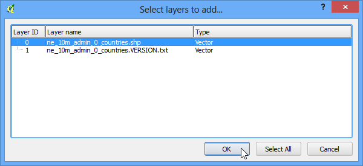
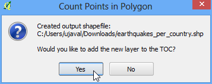

Poin di Analisis Poligon
[ Download PDF A4 Letter ]
Kekuatan GIS terletak dalam menganalisa sumber data berlipat atau multiple secara bersamaan. Sering kali jawaban yang anda cari terletak pada banyak layer yang berbeda dan anda perlu untuk melakukan beberapa analisa untuk mengekstrak dan mengkompile informasi ini. Satu dari beberapa analisis adalah Points-in-Polygon . Ketika anda mempunyai sebuah layer poligon dan sebuah layer poin- dan ingin tahu berapa banyak atau poin yang mana yang berhubungan pada tiap poligon, anda dapat menggunakan metode analisis ini.
Tinjauan Tugas
Diberikan lokasi dari semua gempa bumi yang signifikan, kita akan mencoba untuk mencari tahu negara mana yang mempunya kasus gempa bumi terbanyak.
Prosedur
Buka dan jelajah file yang sudah terunduh signif.txt .

karena ini adalah sebuah tab-delimited file, pilih Tab sebagai File format . X field dan Y field akan dipopulasikan secara otomatis. Klik OK.
Catatan
Anda mungkin melihat beberapa pesan error saat QGIS mencoba untuk mengimpor file. Ini adalah error yang valid dan beberapa baris dari file tidak akan terimpor. Anda bisa mengacuhkan error sebagai tujuan tutorial ini.

Dataset gempabumi memiliki koordinat Latitude/Longitude, pilih WGS 84 EPSG:436 sebagi CRS pada dialog Coordinate Reference System Selector .

Layer point gempabumi sekarang dibuka dan ditampilkan di QGIS. Mari buka juga layer Countries atau Negara. Akses dan klik Open . Pilih ``ne_10m_admin_0_countries.shp` sebagai layer di dialog Select layers to add... .

Klik

Pada jendela pop-up, piloih layer poligon dan layer poin berurutan. Beri nama layer hasil sebagai ``earthquake_per_coutry.shp` dan klik OK.
Catatan
Mohon untuk bersabar setelah mengklik OK, QGIS mungkin memerlukan waktu sampai 10 menit untuk mengkalkulasi hasilnya.
Saat anda ditanyakan apakah anda ingin menambah layer ke TOC, klik Yes.

Anda akan melihat sebuah layer baru ditambahkan ke daftar isi. Bukan tabel attribut dengan mengklik kanan pada layer dan memilih Open Attribute Table.

Di Tabel attribut, anda akan melihat kolom baru bernama PNTCNT . Ini adalah jumlah poin dari layer gempabumi yang terletak pada setiap poligon.

Untuk mendapatkan jawaban kita, kita dapat secara sederhana dengan mengurutkan tabel dari kolom PNTCNT dan negara dengan jumlah terbanyak adalah jawaban kita. Klik 2x pada kolom PNTCNT untuk mengurutkan dari paling akhir. Klik pada baris pertama untuk memilihnya dan tutup tabel attribut.

Kembali pada jendela utama QGIS, anda akan melihat satu fitur yang ditandai dengan warna kuning. Ini adalah fitur yang berhubungan dengan baris terpilih di table attribut yang mempunyai jumlah poin terbanyak. Pilih tool Identify dan klik pada poligon tersebut. Anda akan melihat negara dengan jumlah gempabumi yang paling signifikan adalah China.

Kami mendapat dari analisis sederhana dari 2 dataset bahwa China kala itu mempunyai jumlah kasus gempabumi terbanyak. Anda bisa memperhalus analisis ini lebih jauh dengan mempertimbangkan populasi dan juga ukuran negara dan menentukkan negara mana yang paling banyak terkena dampak negatif gempabumi.